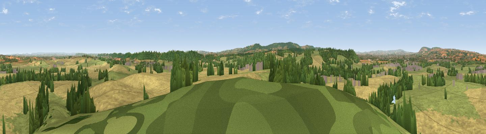

Thorn Hill
#10844 in England · top 26% of its area beats it · near WrantageWhere it is
The exact computed spot (ST 28675 23325). Click the marker for map links.
The view, rendered

A 360° render of this exact spot computed from the terrain model, tree cover and land cover — summer colours, afternoon light, calibrated against photographs of famous viewpoints. Real trees, hedges and buildings will differ in detail.
The panorama
Grey silhouette: terrain skyline in each direction (720 bearings, Earth curvature and refraction included). Dashed green: skyline with trees (+15 m) and buildings (+8 m) as obstacles. Blue strip: how far the ground is visible on each bearing.
Where the view opens
Wedge length = distance to the farthest visible ground on that bearing (vegetation-aware). Rings at 10, 25 and 50 km.
What fills the view
49% cropland · 36% grassland · 13% woodland · 2% built-up
Angular shares of the visible panorama (visual magnitude), not map area. Landscape diversity 0.46 (0–1 Shannon).
Key numbers
More beautiful places nearby
The staircase of upgrades: each row has a higher view potential than everything closer. Driving times are estimates from straight-line distance, calibrated against real road routing — check an actual route before setting out.
| Place | Direction | Drive | Score |
|---|---|---|---|
| Viewpoint near Stoke St Mary | WSW · 2 km | ~5 min | 66.4 |
| Viewpoint near Curry Mallet | E · 4 km | ~10 min | 68.0 |
| Viewpoint near Buckland St. Mary | S · 8 km | ~16 min | 73.0 |
| Viewpoint near Buckland St. Mary | S · 8 km | ~16 min | 77.3 |
| Viewpoint near Broomfield | NW · 13 km | ~24 min | 78.5 |
| Cothelstone Hill | NW · 13 km | ~24 min | 82.1 |
| Viewpoint near West Bagborough | NW · 15 km | ~28 min | 84.3 |
| Wills Neck | NW · 17 km | ~30 min | 85.7 |
51.00487, -3.01793 · source: dobih hill · position refined by local search. Computed location — check access rights before visiting.